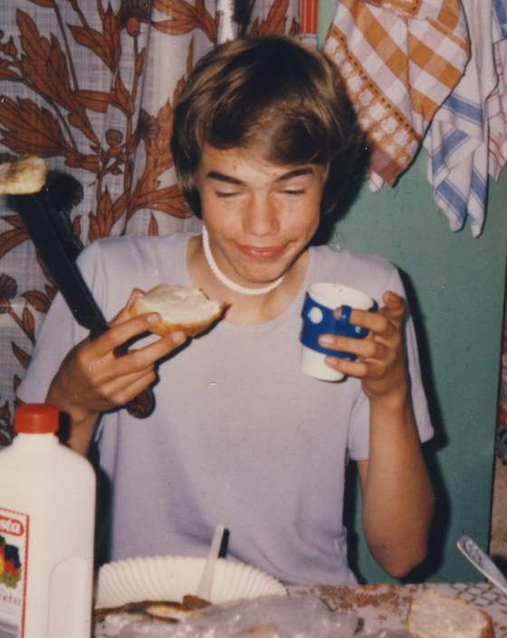
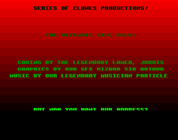
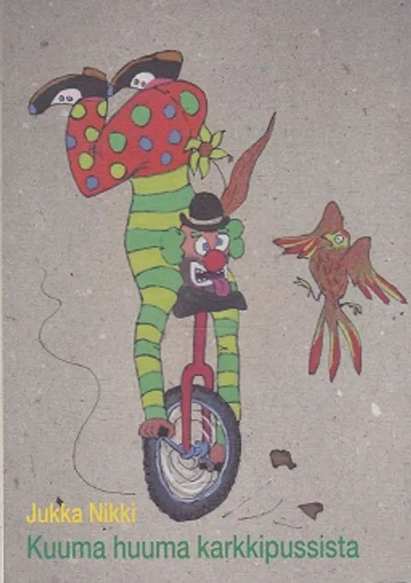
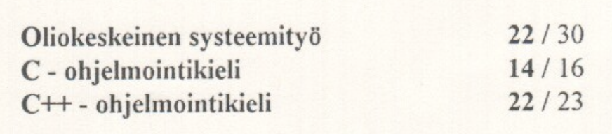
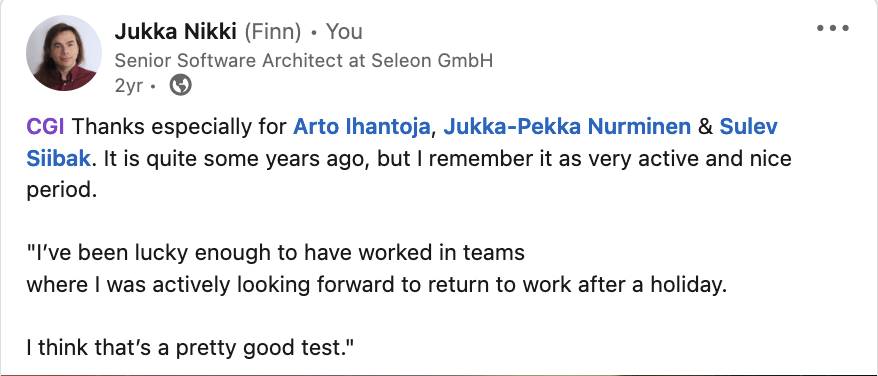
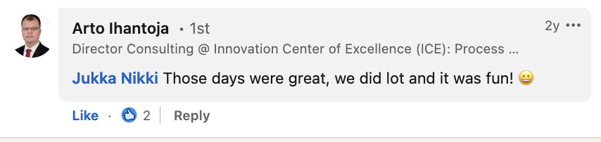
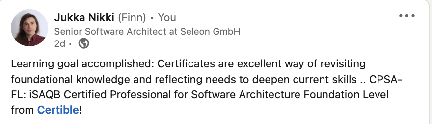
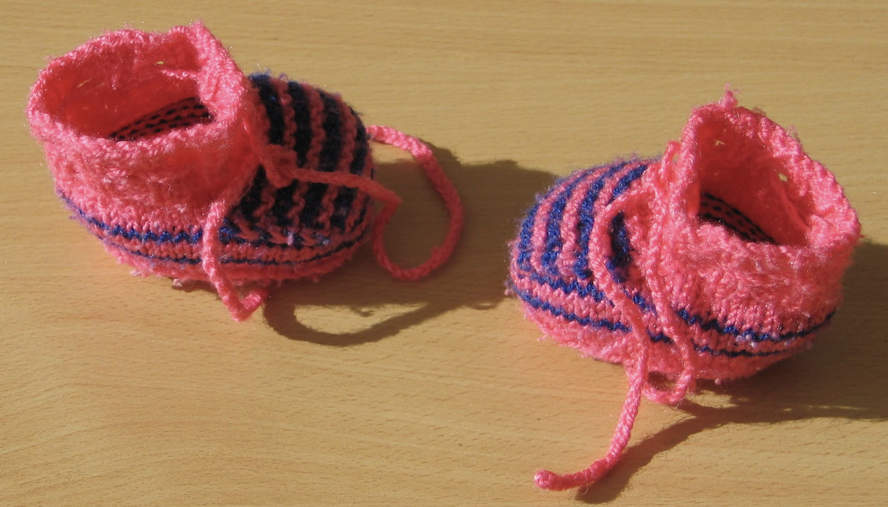
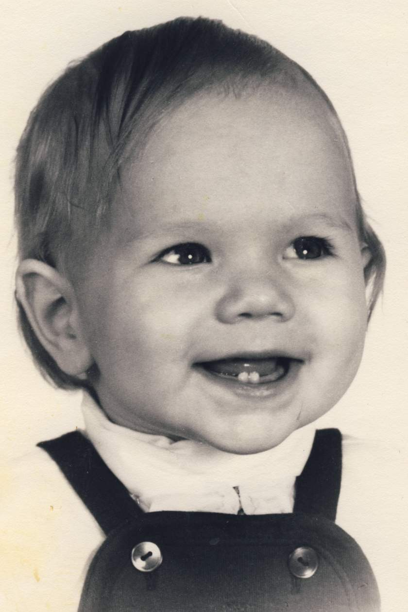

### @nikkijuk "The programmer, like the poet, works only slightly removed from pure thought-stuff. He builds his castles in the air, from air, creating by exertion of the imagination. Few media of creation are so flexible, so easy to polish and rework, so readily capable of realizing grand conceptual structures." —Fred Brooks, The Mythical Man-Month “Everyday life is like programming, I guess. If you love something you can put beauty on it.” ― Donald Knuth // Name: Jukka Nikki, Identity: Programmer, Since: 6502 // Skills: Iterate from Abstract to Concrete
summerhouse, 80s  no computers allowed :( coding with pen & paper
### Random facts - Born 1969, Finland - Started programming around 1983 - Amiga demoscene late 80s - early 90s - First (very bad) poems around 1987 - IT studies finished 1991, 1993, 2010 - Professional programmer since 1993 - Volunteer work at Night Cafe 1997 - 2010 - Published poems 2004, performed 2001 - 2007 - Moved to Germany 2007 or so.. - Married 2008, daughters 2009 & 2014
#### [Demos: Nikki Corruptions](https://demozoo.org/groups/7700/) & Clones  [Nikki Corruptions](http://janeway.exotica.org.uk/author.php?id=12915) had tons of members and released [at least 19 demos between 1989-1992](https://demozoo.org/groups/7700/). I mentored others, wrote code as a "Legendary Lamer", and connected people.
#### [Poems: Runokaarina / Lorulafka](https://www.kaleva.fi/jukka-nikki-voitti-runo-kaarinan/1962275)  ["Kuuma Huuma Karkkipussista"](https://www.finna.fi/Record/jykdok.973659) was published 2004 as I won [Runokaarina](https://www.kaleva.fi/jukka-nikki-voitti-runo-kaarinan/1962275) poetry competition. Cover art is by Clown [Kukka Eklund](https://www.linkedin.com/in/kukka-eklund-76a39a7b/), who was performing poems with me and Pianist [Pekka Mattila](https://www.linkedin.com/in/pekka-mattila-46136657/) in "Lorulafka".
#### Title: Generalist, Senior Software Architect "The role of architects has changed from trying to be the smartest person to making everyone else smarter." - Gregor Hohpe Every system is product of people who built it. It has tremendous influence to results how those people see their role and how they work together. Software architecs task is to help all of them. Whatever help they need.
#### Studies: 1991, 1993, 2010  Datanomi 1991 at the times of Cobol, C/C++ & OOA/OOD 1993 when Object orientation was "hot", Bachelor 2010 when Nokia collapsed. Learned procedural programming at 80's with 6502/68000 assembler, object oriented programming at 90's with C++/Java and functional programming at 2010's with TS/Kotlin.
#### Career: [Good People & Helping others](https://www.linkedin.com/posts/nikkijuk_the-best-and-worst-places-to-work-for-developers-activity-6870377845357731840-oOJD/)  - Titles are nice, but just a tool. - You need honest and open people around you. - Helping others to succeed breeds motivation. - Sharing is important, not exclusive knowledge.
#### From stability to flux Finland: 15 years at CGI + mobile startup. Germany: Freelancer + AI startup + Bank + Automotive + Legal startup + Medical Devices Challenge: How to learn new culture, language, find as immigrant a place in new society and manage switch from high job status / high communication tasks to lower status and less able to communicate.
#### Mindset: Curiosity, Learning, Teaching, Leading, Programming  - Curiosity (neu'gier) drives growth. - Learning and teaching support each other. - Leading is about helping others to find their way. - Programming is fun, but just one skill you need.
#### Skills: Iterate from Abstract to Concrete "I believe the hard part of building software to be the specification, design, and testing of this conceptual construct, not the labor of representing it and testing the fidelity of the representation." - Fred Brooks - Model: Domain, Requirements, Architecture - Representation: Code, Tests, Documentation If you can't explain it, you can't build it. Models are views to reality. Reality needs to be shared and understood by all stakeholders.
#### Superpowers: 1x & 2x  I met my wife 2005 and we married 2008. I learned German and passed B1 test 2009 & C1 2014. Our daughters are born 2009 & 2014. We Live in Leipzig, Germany. We have a very well behaving cat sharing cat with our former neighbor. Life is good.
### Shameless [closing quote](https://www.inc.com/marcel-schwantes/this-1-simple-way-of-thinking-separates-smartest-people-from-everyone-else.html) "I have no special talent. I am only passionately curious." - Albert Einstein “People think that computer science is the art of geniuses but the actual reality is the opposite, just many people doing things that build on each other, like a wall of mini stones.” ― Donald Knuth It's only possible to succeed together, to trust and build on shared commitment. Curiosity, playing with ideas and learning from others are most important traits and skills in knowledge game called "work".
"Bad software architecture is a people problem. When people don't work well together they make bad decisions." - Kate Matsudaira "The architect's role is changing from being primarily a decision maker to being a coordinator, advisor, and knowledge manager ... a central knowledge hub." - Rainer Weinreich & Iris Groher "Excessive complexity is nature’s punishment for organizations that are unable to make decisions." - Gregor Hohpe
still the same guy  curious & open for learning
# Summary // Name: Jukka Nikki, Identity: Programmer, since: 6502 // Title: Generalist, Senior Software Architect // Studies: C & C++, OOA & OOD, Career: Helping others // Mindset: Curious, Learn & Teach, Lead, Program // Skills: Iterate from Abstract to Concrete // Superpowers: 1x Wife, 2x Daughters, Poetry // Goal: Learn. Trust & Commit. Avoid Force-Push.